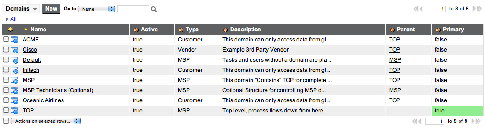
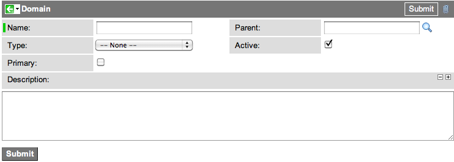

Domain Separation for MSPs
| |
Note: This article applies to Fuji and earlier releases. For more current information, see Domain Separation at http://docs.servicenow.com
The ServiceNow Wiki is no longer being updated. Visit http://docs.servicenow.com for the latest product documentation. |
Contents
- 1 Overview
- 2 Requirements
- 3 Requesting the Plugin
- 4 MSP Domain Table
- 5 Automatically Assigning Users to Domains
- 6 Manually Managing the Domain for Particular Records
- 7 Viewing Domain Relationships
- 8 Creating a New Domain
- 9 Managing Domains from a Company Record
- 10 Installed with the Domain Support - MSP Extensions Plugin
1 Overview
The Domain Support - MSP Extensions option helps Managed Service Providers (MSPs) manage multiple domains. MSPs have networks that may contain hundreds of domains and thousands of subdomains.
The MSP Extensions include the following features.
- New domain table: store domains in the Domain table.
- New domain form: set properties for each domain.
- Assigning domain by company: assign users to a domain based on their company automatically .
- Managed domain: allow a domain administrator to manually manage the domain for an individual user, group, department, location, or CI record.
- Company-based domain deactivation: deactivate all domains and users associated with a company automatically.
- Company-based domain updates: update the domain of associated records assigned to the same company automatically.
- Default domain: assign task and user records to a domain automatically.
- Domain map: view the domain hierarchy from a visual map.
- Primary domain: designate the top level domain in the domain map.
2 Requirements
MSP Extensions activates features from Domain Separation.
| |
Note: The MSP Extensions option is only for instances that have not previously installed domain separation; it should not be used in instances with an existing domain separation implementation. |
3 Requesting the Plugin
Request the Domain Support - MSP Extensions Installer plugin from HI. This plugin is intended for instances that have not previously activated domain separation.
Activating the Domain Support - MSP Extensions Installer plugin activates the Domain Support plugin.
Activating the Domain Support - MSP Extensions Installer plugin sets the default domain table in Domain Admin > Configuration to Domain. For more information about domain configuration, see Domain Separation Setup.
4 MSP Domain Table
The MSP Extensions feature automatically sets the domain table to a new table called Domain. In addition, the Domain table contains demo domain records. By default, the domain query method is set to domain paths to accommodate queries against large numbers of domains.
5 Automatically Assigning Users to Domains
MSP Extensions can automatically assign users to domains:
- Based on a company record
- Based on a default domain
There are several sample companies assigned to sample domains. In addition, the demo data includes a sample default domain.
5.1 Company Domains
MSP Extensions uses a company record to set the domain for any user assigned to the company. Users inherit the domain of the company they belong to. Typically, MSP administrators assign all users to a company.
5.2 Default Domain
The default domain is the domain to which ServiceNow automatically assigns task and user records that are not already assigned to a domain. The instance checks for a domain value whenever someone creates or updates task or user records. If the record would otherwise be a member of the global domain, the instance automatically assigns it instead to the Default domain.
There can only be one default domain at a time. If you select another domain as the default, any new records you create use the new default domain.
- Navigate to Domain Admin > Domains.
- Open the domain you want to be the default domain. For example, Default.
- Configure the form layout to add the Default field.
- Select the Default check box.
- Click Update.
{kind=link}
| |
Note: If you do not set a default domain, then new tasks and user records are placed in the global domain. |
6 Manually Managing the Domain for Particular Records
By default, MSP Extensions automatically assigns a domain based on the user's company record. In some cases, however, domain administrators want to manually manage what domain a given record belongs to. The Managed domain field allows domain administrators to manually select a domain other than the domain assigned automatically from the company record. The Managed domain field is available on these record types.
- User records
- Group records
- Department records
- Location records
- CI records
6.1 Managed Domain
Selecting the Managed domain check box displays the Domain field where the domain administrator can set the domain value for the user, group, department, location, or CI record. Clearing the Managed domain check box hides Domain field and the record uses the domain value from the record's company.
- Navigate to the record you want to manually manage.
- Select the Managed domain check box.
- From the Domain field, select the domain for the record.
- Click Update.
{kind=link}
7 Viewing Domain Relationships
The domain map offers domain administrators a read-only representation of the active domains on the instance and how they relate to each other.
- Navigate to Domain Admin > Domain Map.
{kind=link}
All domain maps must have one domain set as the primary domain. In addition, each domain in the domain map must meet these criteria:
- The Parent field must be filled in (the primary domain is the only exception to this).
- The Active check box must be selected.
The domain map does not draw domain relationships for domains that fail to meet the mapping criteria.
7.1 Primary Domain
The primary domain indicates the top level domain in the domain map.The primary domain cannot have a parent domain and must have at least one child domain. There can only be one primary domain at a time. If you select another domain as the primary domain, it overrides the previous primary domain.
- Navigate to Domain Admin > Domains.
- Select the domain you want to be the primary domain. For example, TOP.
- Select the Primary check box.
- Click Update.
{kind=link}
8 Creating a New Domain
You can create a new domain by creating a new record in the [domain] table. When creating a new domain, keep the following in mind:
To create a new domain record:
- Navigate to Domain Admin > Domains.
- List of sample MSP domains
- Click New.
- New domain record
- Fill in the necessary fields and click Submit.
{kind=link}
{kind=link}
| Field | Description |
|---|---|
| Name | Enter a unique name for the domain. |
| Type | Select a domain type that describes the domain. By default the domain types are Vendor, Customer, and MSP. You can customize the choice list to add your own choices. |
| Primary | Select the check box if this domain is to be the top level domain in the hierarchy. The top level domain only has child domains and no parent domains. |
| Parent | Select the name of the domain higher in the hierarchy that contains this domain. This field must have a value for the domain to appear in the domain map. |
| Active | Select the check box to make the domain available for use. You must select this option for this domain to appear in the domain map. |
| Description | Enter a description for the domain. |
Each domain record can also have several related records.
- Companies
- Contains Domains
- Contained By
To change the domain hierarchy, go to the Contains Domains related list and follow the steps in Creating Contains Relationships Between Domains.
9 Managing Domains from a Company Record
MSP Extensions allows you to cascade changes you make to a company record to the domain and associated records of the company. By default, MSP Extensions automatically assigns users to the same domain as their company. For example, all users of the company ACME automatically become members of the TOP/ACME domain.
| |
Warning: Users with the admin role have the ability to change their own user records and therefore can change domains. Managed Service Providers may want to either disable delegated administration or set up an approval process to verify that the user needs the admin role. |
When you change a company's domain, the instance automatically changes the domain of the following associated records to match the company's new domain.
- Locations
- Departments
- Groups
- Users
| |
Note: The instance does not automatically change the domain of any record where you have selected the Managed domain checkbox. |
9.1 Deactivating a Domain and Associated Companies
When you deactivate a domain, the instance also automatically completes the following actions.
- Deactivates all companies in the domain.
- Prevents all users assigned to the inactive company from logging in.
| |
Note: When a user from an inactive company attempts to log in, the user sees an error message. |
For example, if you deactivate the ACME domain from the sample data, the instance also deactivates the ACME company, and the three sample users are locked out.
{kind=link}
To deactivate a domain, clear the Active check box on the domain record.
{kind=link}
9.2 Activating a Domain from a Company Record
When you activate a company record, MSP Extensions also automatically activates the company's associated domain. For example, if you activate the ACME company, then you also activate the TOP/ACME domain.
10 Installed with the Domain Support - MSP Extensions Plugin
| |
Note: The plugin is named Domain Support - Domain Extensions starting with the Fuji release. |
10.1 Application and Modules
MSP Extensions installs a new application called Domain Admin.
{kind=link}
- Domains: lists existing domains and enables you to create new domains.
- Domain Map: opens a read-only visual representation of all active domains and how they relate to each other.
- Configuration: enables you to change domain settings and view alerts.
10.1.1 Changes to the Service Desk Application
| |
Note: An enhanced service desk call feature is available starting with the Dublin release. It replaces the New Ticket module, which is deprecated starting with Dublin. For more information, see Service Desk Call. |
Also included with the MSP Extensions is a New Ticket module under Service Desk. This module enables users to collect information and create a task record before an issue can be clearly identified as an incident, problem, or change request. For more information, see New Ticket Module.
{kind=link}
10.2 Roles
MSP Extensions includes one new role.
- domain_admin: can create, edit, and delete domains.
10.3 Domain Separated Tables
MSP Extensions domain separates (adds a sys_domain field to) the following tables.
- sys_attachment
- sys_user_has_role
- sys_group_has_role
- sys_email
- sys_user_group
- core_company
- cmn_location
- cmn_department
- sys_gauge
- sys_report
- kb_feedback
- sysapproval_approver
- sys_user_grmember
10.3.1 New Field for the Task Table
MSP Extensions add a task_for field to the Task table to support the New Ticket module. This reference field refers to the User [sys_user] table.
{kind=link}
10.3.2 New Options for the Group Type
MSP Extensions add several new default options to the type field of the Group table. Add to or update these types as needed to support your domains.
- Security
- Support
- Visibility
{kind=link}
10.4 Business Rules
MSP Extensions installs the following business rules.
- Domain - Activate/Deactivate (core_company): activates the related domain if at least one of its companies is active. Deactivates the related domain if all related companies are inactive.
- Domain - Cascade Company (core_company): keeps a company's domain in sync with its users, groups, departments, and locations.
- Domain - Cascade Domain - Email (sys_email): keeps an email's domain in sync with its attachments.
- Domain - Cascade Domain - Group (sys_user_group): keeps a group's domain in sync with its inherited roles (sys_group_has_role records).
- Domain - Cascade Domain - Knowledge (kb_knowledge): keeps a knowledge article's domain in sync with its related feedback.
- Domain - Cascade Domain - Task (task): keeps the domain in sync with related tasks for wf_context, wf_executing, wf_history, attachments, emails, task_sla and its workflow, sysapproval_approver and its workflow, and sysapproval_group and its workflow.
- Domain - Cascade Domain - User (sys_user): keeps a user's domain in sync with its group membership (sys_user_grmember) and role (sys_user_has_role) records.
- Domain - Cascade Domain - Version (wf_workflow_version): keeps domains in sync with related workflow versions for wf_activity and wf_transition.
- Domain - Deactivate Companies (domain): deactivates related companies if a domain is deactivated.
- Domain - Default - Task (task ): sets the task domain based on the Task for user's domain. If this domain would be global, sets domain to Default instead.
- Domain - Default - User (sys_user): sets a user's domain to Default if the domain otherwise would have been global.
- Domain - Disallow Global Domain Record (domain): prevents creation of a domain with the name global.
- Domain - Override Copy (sys_app_application): when an application is overridden for a domain, creates a copy of its modules for the new application.
- Domain - Override Copy (sys_data_policy2): when a data policy is overridden for a domain, creates a copy of its data policy rules for the new data policy.
- Domain - Override Copy (sys_gauge): when a gauge is overridden for a domain, creates a copy of its gauge counts for the new gauge.
- Domain - Override Copy (sys_ui_action): when a UI action is overridden for a domain, creates a copy of its UI action views for the new UI action.
- Domain - Override Copy (sys_ui_list_control_embedded): when an embedded list control is overridden for a domain, creates a copy of its client and server scripts for the new embedded list control .
- Domain - Override Copy (sys_ui_policy): when a UI policy is overridden for a domain, creates a copy of its UI policy actions for the new UI policy .
- Domain - Set Domain - Approvals (sysapproval_approver): sets the domain based on that of the record being approved.
- Domain - Set Domain - Attachment (sys_attachment): sets the domain based on the parent record's domain.
- Domain - Set Domain - CMDB_CI (cmdb_ci): sets a CI's domain to that of its company.
- Domain - Set Domain - Department (cmn_department): sets a department's domain to that of its company.
- Domain - Set Domain - Domain (domain): sets a domain's domain to itself.
- Domain - Set Domain - Email (sys_email): sets the domain based on the parent record's domain. An email's parent record is the record specified in the instance field.
- Domain - Set Domain - Feedback (kb_feedback): sets a knowledge feedback's domain to that of its knowledge article.
- Domain - Set Domain - Group (sys_user_group): sets a group's domain to that of its company.
- Domain - Set Domain - Group Approvals (sysapproval_group): sets the domain based on that of the record being approved.
- Domain - Set Domain - Group Role (sys_group_has_role): sets a group role's domain to that of its group.
- Domain - Set Domain - Location (cmn_location): sets a location's domain to that of its company.
- Domain - Set Domain - Task SLA (task_sla): sets a task SLA's domain to that of its task.
- Domain - Set Domain - User (sys_user): sets a user's domain to that of its company.
- Domain - Set Domain - User Role (sys_user_has_role): sets a user role's domain to that of its user.
- Domain - Set Domain - WF Activity Hist (wf_history): sets the workflow activity history domain based on the parent workflow context's domain.
- Domain - Set Domain - WF Context (wf_context): sets the workflow context domain based on the referenced record's domain, if it has one.
- Domain - Set Domain - WF Exec Activity (wf_executing): sets the workflow executing activity domain based on the parent workflow context's domain.
- Domain - Set task for - Change (change-request): when converting a ticket to a change request, sets the Requested by field to the ticket's Task for value.
- Domain - Set task for - Incident (incident): when converting a ticket to an incident, sets the Caller field to the ticket's Task for value.
- Domain - Validate Default (domain): ensures only one domain has the Default check box selected.
- Domain - Validate Primary (domain): ensures only one domain has the Primary check box selected.
10.5 Business Rules Installed with Domain Support Plugin
- Change Domain Set (sys_dictionary): sets the domain set to the current domain.
- Domain support properties (sys_properties): sets the system properties to match the domain query method (domain paths or domain numbering).
10.6 Client Scripts
MSP Extensions installs the following client scripts.
- Domain - Set Company and Location (sys_script): monitors the incident caller field for changes. If the company and location fields do not already have a value, the script adds this information from the caller record. If the company and location fields already have a value, the script retains the existing values.
MSP Extensions deactivates the following existing client scripts.
- (BP) Set Location to User: monitors the incident location field and sets the location field to the caller's location.